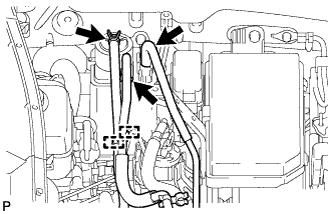
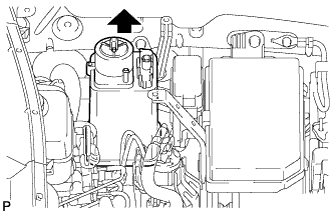
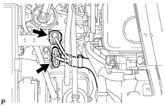
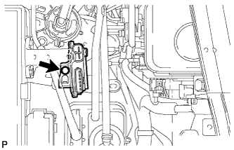

HYDRAULIC BRAKE BOOSTER > REMOVAL |
| 1. DISCONNECT CABLE FROM NEGATIVE BATTERY TERMINAL |
| Condition | Waiting Time |
| Vehicle enrolled in G-BOOK system | 6 minutes |
| Vehicle not enrolled in G-BOOK system | 1 minute |
| 2. REMOVE ENGINE ROOM SIDE COVER LH |
Remove the 4 clips and engine room side cover LH.
| 3. DRAIN BRAKE FLUID |
| 4. REMOVE LOWER NO. 1 INSTRUMENT PANEL AIRBAG ASSEMBLY |
Remove the lower No. 1 instrument panel airbag assembly (Click here).
| 5. REMOVE PUSH ROD PIN |
Remove the clip and push rod pin from the brake pedal.
| 6. REMOVE FUEL FILTER ASSEMBLY |
Remove the fuel filter assembly (Click here).
| 7. REMOVE CANISTER |
|  |
Disconnect the purge line hose from the canister.
Disconnect the vent line hose from the canister.
Disconnect the air inlet line hose from the canister.
|  |
Remove the canister from the bracket.
| 8. REMOVE AIR INJECTION CONTROL DRIVER WITH BRACKET |
|  |
Disconnect the 2 air injection control driver connectors.
|  |
Remove the bolt and air injection control driver with bracket.
| 9. REMOVE HYDRAULIC BRAKE BOOSTER ASSEMBLY |
Disconnect the 3 connectors from the hydraulic brake booster assembly.
Detach the clamp.
Remove the bolt and wiring harness bracket.
Using a screwdriver, detach the VSC connector from the clamp bracket.
 |
Use tags or make a memo to identify the place to reconnect.
Using a union nut wrench, disconnect the 4 brake lines from the hydraulic brake booster assembly.
Disconnect the 3 brake tubes from the clamp.
Disconnect the brake tube from the clamp.
Remove the bolt and disconnect the clamp from the body.
 |
Remove the 4 nuts and pull out the hydraulic brake booster assembly.
| 10. REMOVE BRAKE BOOSTER GASKET |
Remove the brake booster gasket from the hydraulic brake booster assembly.